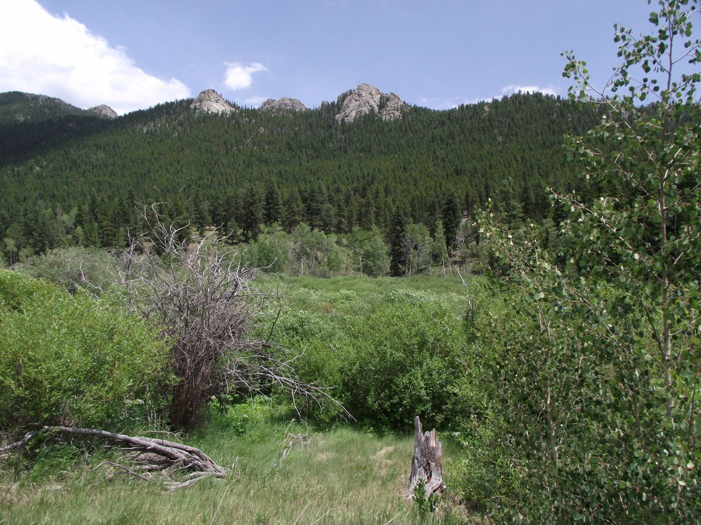
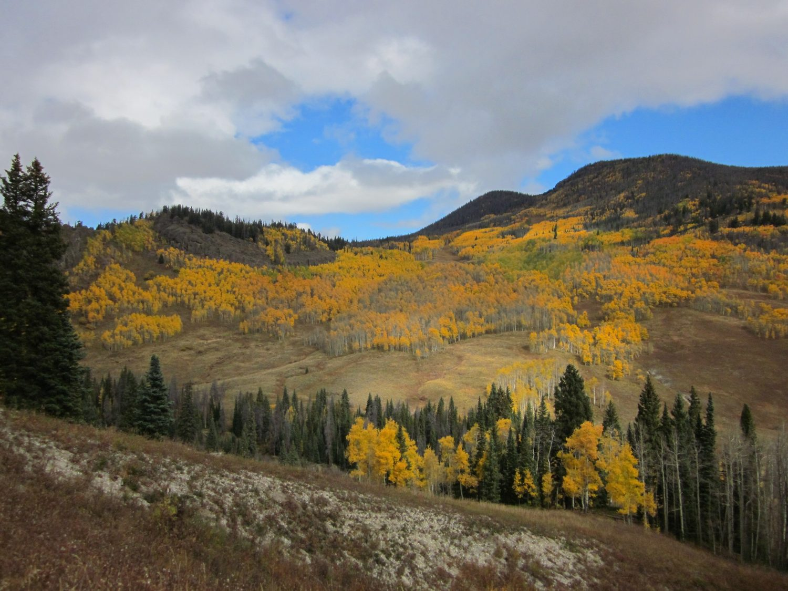
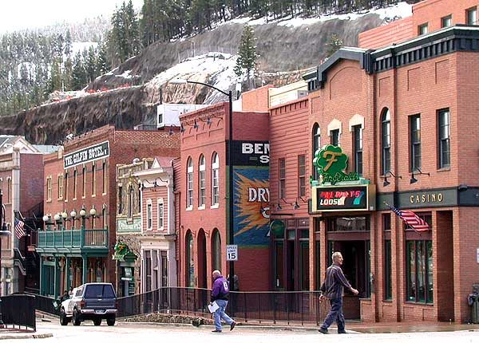
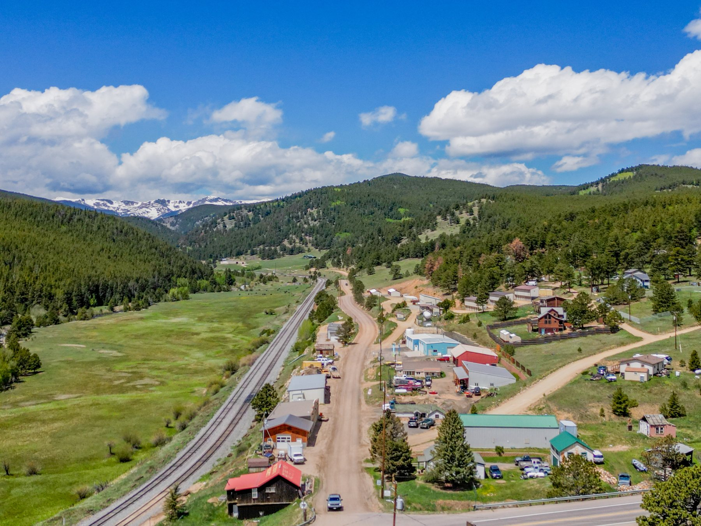
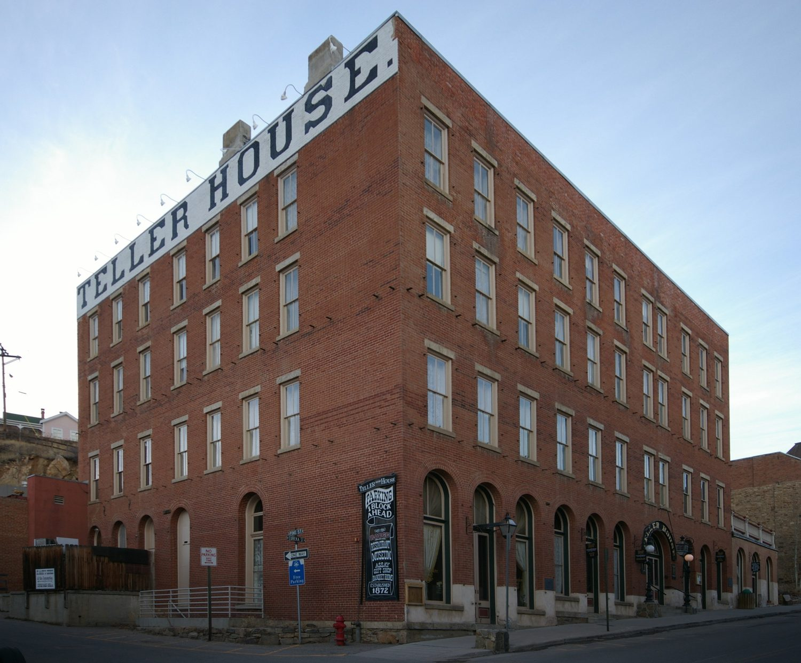
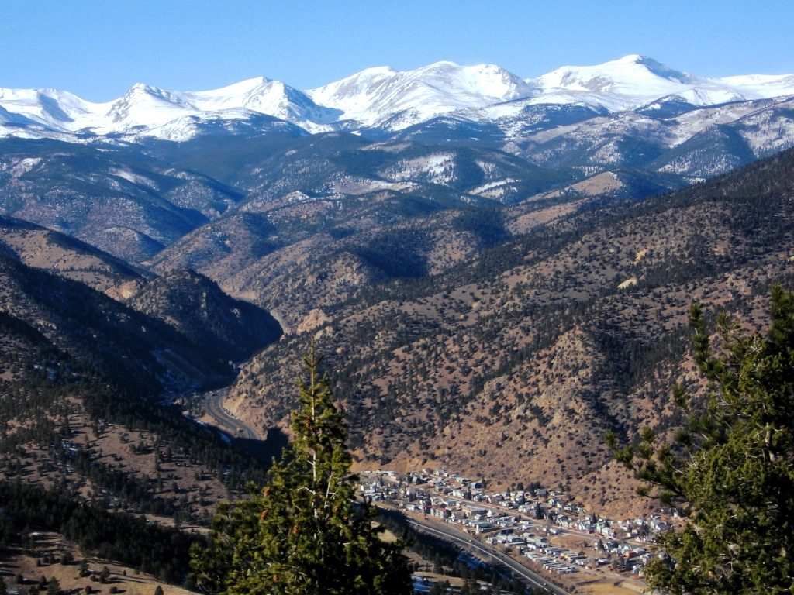
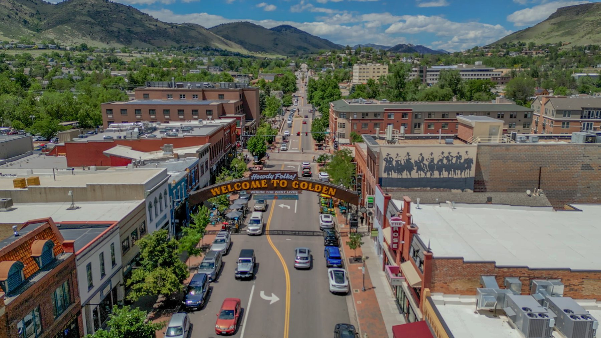

What to check before you write an offer on high country ground, from a broker who has closed these transactions in Gilpin County since 2010.
A house comes with utilities, a driveway, and a septic system somebody already permitted. Mountain land for sale in Colorado comes with questions instead, and the answers are what set the price.
Most of the parcels around Black Hawk, Central City and Rollinsville were subdivided decades ago, some of them out of mining claims that predate the county's current zoning. Two lots that look identical on a listing map can differ by fifty thousand dollars because one has a household well permit available and the other does not. This page walks through what Jerry checks, in the order he checks it.
If you would rather just look at what is currently for sale, the land and mining claims page has the live listings.
Due diligence
Six things that decide what a parcel is worth
None of these are visible from the road, and all six have killed deals that looked fine on paper.
Water and well permits
An existing well needs a permit on file, and the permit type controls what the water may be used for. On raw ground the real question is whether a household use permit is even available for that parcel, which depends on the aquifer and the basin. Check it at the Colorado Division of Water Resources.
Septic and OWTS feasibility
Gilpin County regulates on site wastewater treatment systems, and steep or rocky ground can fail a soil test outright. A parcel that cannot take a septic system cannot take a house. The county community development office holds the records.
Legal access and easements
A road existing on the ground is not the same as a road you have the right to use. Some parcels are reached across a neighbour's land by easement, some by county roads not maintained in winter, and a few by routes never recorded at all. This is the single most common reason a mountain lot is cheap.
Mineral rights
In old mining country the minerals were frequently severed from the surface a century ago and sold separately. You can own the surface while somebody else owns what is under it. Title work should tell you, and on a claim you want it read carefully.
Federal boundaries
Roosevelt and Arapaho National Forests border a lot of this ground, and so does BLM land. Where your line actually falls affects what you can build, how you get in, and whether a neighbour's road crosses federal land. One buyer's diligence here included a conversation with the Forest Service.
Getting power to the parcel
The distance from the nearest line, and who owns the poles in between, decides whether a hookup costs a few thousand dollars or tens of thousands. Off grid is a legitimate answer up here, but it should be a decision rather than a surprise.
The process
Eight steps, in the order they actually happen

01
Prove your funds, or get pre approved
Raw land is harder to finance than a house. Many lenders will not touch it, and the ones that do usually want more money down and a shorter term. Cash is common up here. Sorting this first tells you what you are actually shopping for.

02
Decide what access you can live with
Year round paved access, or a road you plow yourself, or a jeep track you only use in summer. This one answer removes most of the market from consideration and saves you looking at parcels you were never going to buy.

03
Search and shortlist
Jerry pulls what is on the MLS and what he knows about that has not hit it yet. In a county this small a meaningful share of land changes hands through people who know the seller. Start with the search, then talk to him about the rest.

04
Walk the parcel
In person, with the plat. Where the building envelope would sit, where a well would have to go, what the slope does to your driveway cost, whether the view you are paying for is on your land or the neighbour's. Jerry will tell you when a parcel is not worth its asking price.

05
Verify water, septic and utilities
The permit search, the soil and OWTS question, the electric hookup distance. This is where the six items above get checked one at a time, before your money is at risk rather than after.

06
Read the title, the easements and the mineral rights
Title commitments on old mining ground are longer and stranger than suburban ones. Severed minerals, historic rights of way, and claim boundaries that do not follow section lines all show up here. Read every exception.

07
Negotiate and contract
Land sellers are often not in a hurry, and a fair number are settling an estate. Jerry holds a Master Certified Negotiation Expert designation, which matters most in exactly this situation, where the pressure is uneven and the comparables are thin.
08
Close
Deadlines, documents, and the small pile of things that go wrong in the last week. Multiple reviewers said the same thing about this stage, that he stayed on the paperwork and told them where it stood without being chased.
Signature
Ask Black Hawk Real Estate
The questions that come up over and over when somebody is looking at high country ground for the first time.
Two different questions. An existing well needs a permit on file with the Colorado Division of Water Resources, and the permit type controls what you may use the water for. On raw ground you are asking whether a household use permit is available at all for that parcel, which depends on the aquifer and the basin. Jerry checks this before you write an offer, not after.
A road existing on the ground is not the same as a road you have the right to use. Some Gilpin County parcels are reached by easements across neighbouring land, some by county roads that are not maintained in winter, and a few by routes that were never recorded. Ask for the recorded access before anything else, because this is the most common reason a cheap lot is cheap.
A patented mining claim is private land, granted out of the federal estate, and it can generally be built on subject to county zoning. An unpatented claim is a right to minerals on land the federal government still owns, and it is not a building site. The two get advertised in similar language and they are not remotely the same purchase. Jerry has closed both.
Usually yes, subject to Gilpin County zoning, the septic result, and any covenants recorded against the subdivision. Manufactured homes trade regularly up here and Jerry has sold several. What stops people is far more often the septic feasibility than the zoning.
It depends entirely on the road, and the honest answer for some parcels is that you will be plowing it yourself or not reaching the property between storms. That is a normal trade off at 8,500 feet, and plenty of owners accept it happily. It should be a decision you made rather than one you discovered in January.
People do, and several of Jerry's reviews are from buyers who did exactly that. One family found him from another state and closed remotely. It works when the diligence is done properly and reported back honestly, and it goes badly when a buyer relies on listing photographs. Ask for the plat, the permits and a video walk of the access road.
Working with Jerry
He will talk you out of a parcel
The useful thing about a broker who has sold this ground for sixteen years is not the listings, it is the ones he tells you to skip.
Jerry has been the seller's agent on parcels that needed a very particular buyer, including a steep lot on South Boulder Creek that suited somebody who wanted the fishing more than a building envelope. He knew that before it was listed. That same read works in your favour when you are the buyer.
He is also the only broker in this market who spent two decades inside HUD disposition. That background is why he is unbothered by a messy title commitment or an estate sale with four siblings who do not agree.
I worked with Jerry when purchasing my first home. He was very diligent in explaining the home buying process and making sure we felt comfortable each step of the way. Jerry was extremely responsive would answer any questions promptly.
Kane E.
First purchase · Zillow
Mr. Baker was a key aspect in getting us through the buying process of our land. He was very knowledgeable but he also ensued that that knowledge wasn't just kept to himself.
Stephen M.
Land purchase, CO 80422 · Zillow
Selling instead
Already own ground up here?
Inherited acreage, a lot that has sat on the market, or a cabin you are ready to move on from. The seller's guide covers valuation, marketing and what mountain property actually needs.
Current listings, plus the difference between a patented and an unpatented claim in plain language.
Next step
Send him a parcel number
If there is a specific piece of ground you are looking at, send the address or the schedule number. Jerry will tell you what he already knows about the access and the water before you spend anything on diligence.